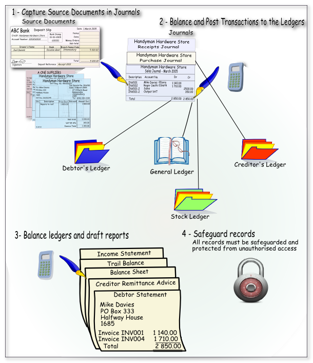

Manual system
In a manual accounting system, financial transactions are recorded by hand in a journal or ledger. The process typically involves the following steps:
- Identify the transaction: The first step is to identify the transaction that needs to be recorded, such as a sale, purchase, payment, or receipt of funds.
- Record the transaction: Once the transaction has been identified, it is recorded in a journal or ledger. This involves writing down the date, amount, and description of the transaction.
- Post to accounts: The next step is to post the transaction to the appropriate accounts in the ledger. For example, a sale would be recorded in the sales account, while a purchase would be recorded in the purchases account.
- Reconcile accounts: At the end of a period, the accounts are reconciled to ensure that they balance. This involves comparing the totals of the debits and credits in each account to ensure that they are equal.
- Prepare financial statements: Finally, the financial statements are prepared based on the information in the ledger. These may include a balance sheet, income statement, and cash flow statement.
Overall, the manual accounting system can be time-consuming and prone to errors, as it relies on human input and calculations. However, it can be useful for small businesses or individuals who have a limited number of transactions to record.
In a manual accounting system, transactions are recorded and processed using physical documents and handwritten entries. The manual system can be illustrated as follows:

Here is a summary of the basic processes involved in a manual system:
|
Step |
Process |
Description |
|
1. |
Input |
All transaction data, such as cash slips, deposits, cheques, and invoices, are sorted according to their type. Then, the information from these documents is manually written into specific journals. |
|
2. |
Process |
The journals, which contain the recorded transactions, are balanced by ensuring the debits and credits are equal. The information from the journals is then posted manually to the general ledger and subsidiary ledgers. This process can be time-consuming and prone to errors due to manual calculations and entries. |
|
3. |
Output |
A trial balance is prepared to verify the accuracy of the recorded transactions by listing the debit and credit balances. Financial reports and statements, including the trial balance, income statement, balance sheet, debtor statements, creditor remittance advice, and others, are then drafted based on the information recorded in the ledgers. |
|
4. |
Safeguard records |
It is crucial to protect the books of accounts and supporting documents from unauthorized access, fire, theft, and other risks. Proper measures should be taken to secure physical records to ensure their integrity and availability for future reference. |
Overall, while manual accounting systems can be suitable for small businesses or individuals with a limited number of transactions, they are time-consuming and more susceptible to errors compared to computerized accounting systems.